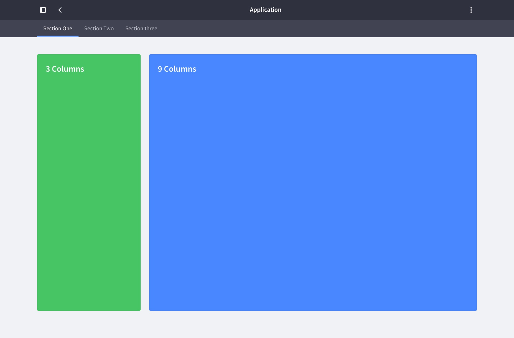
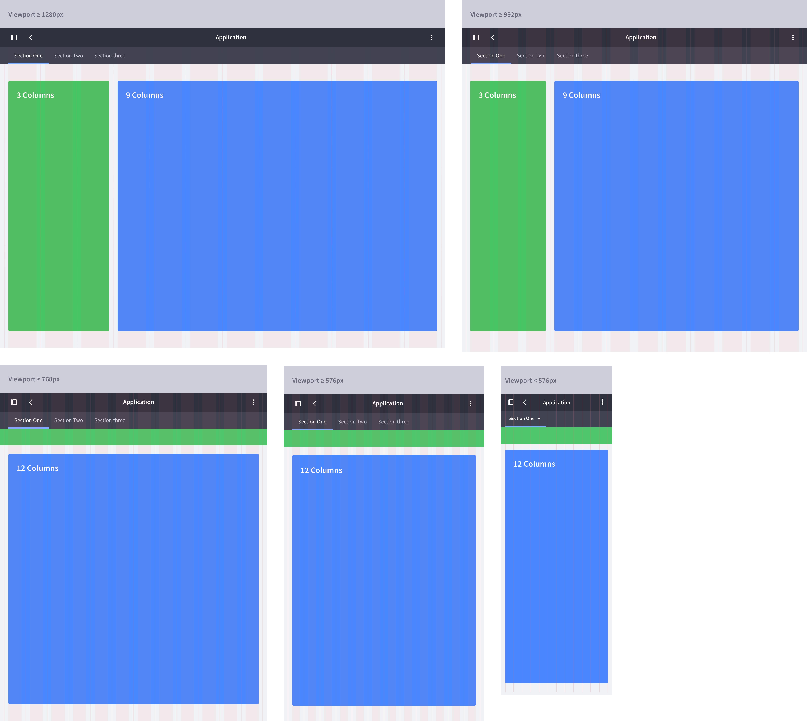
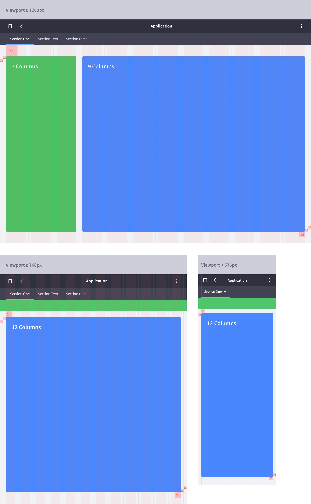
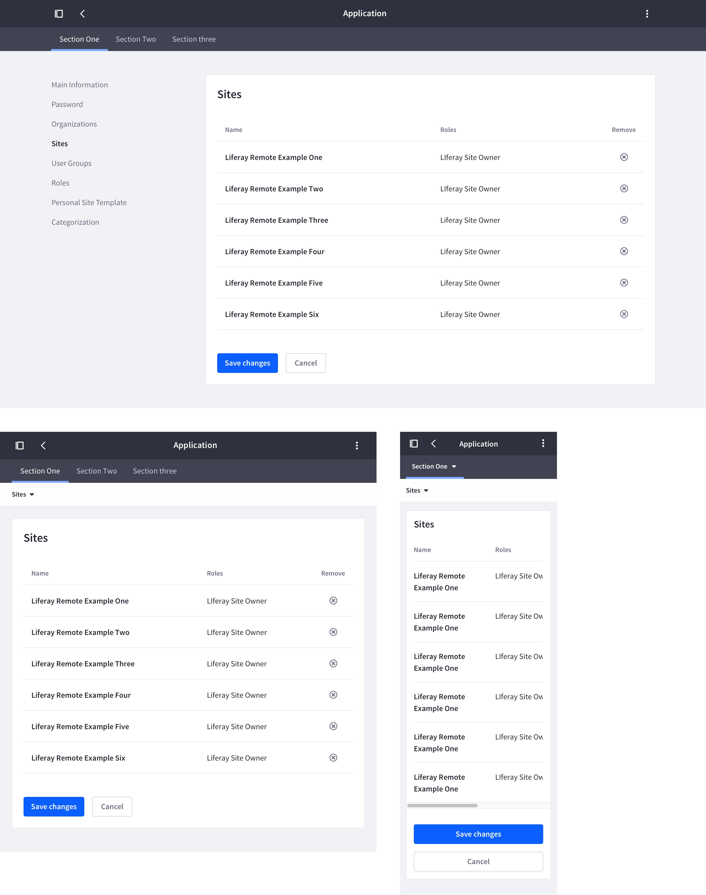
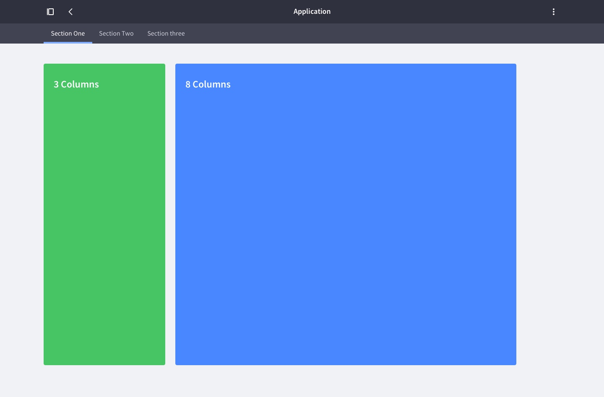
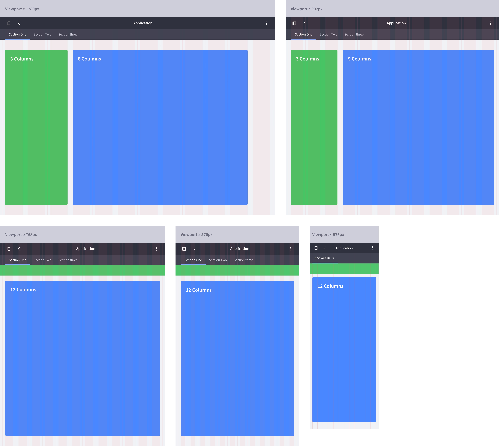
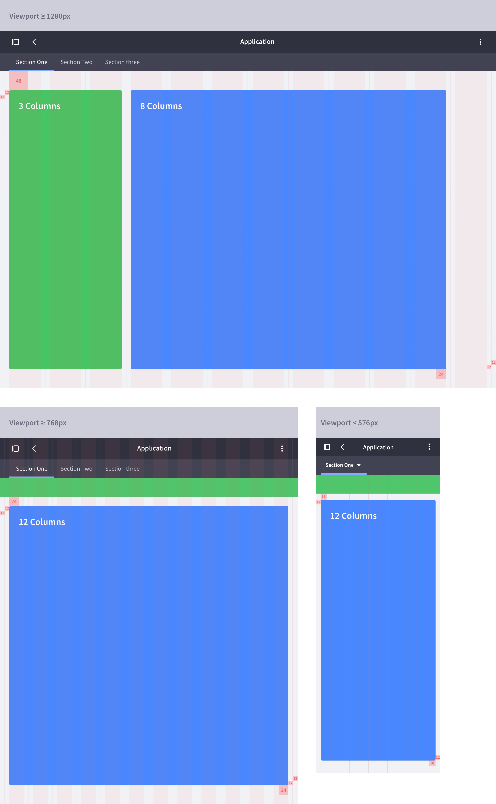
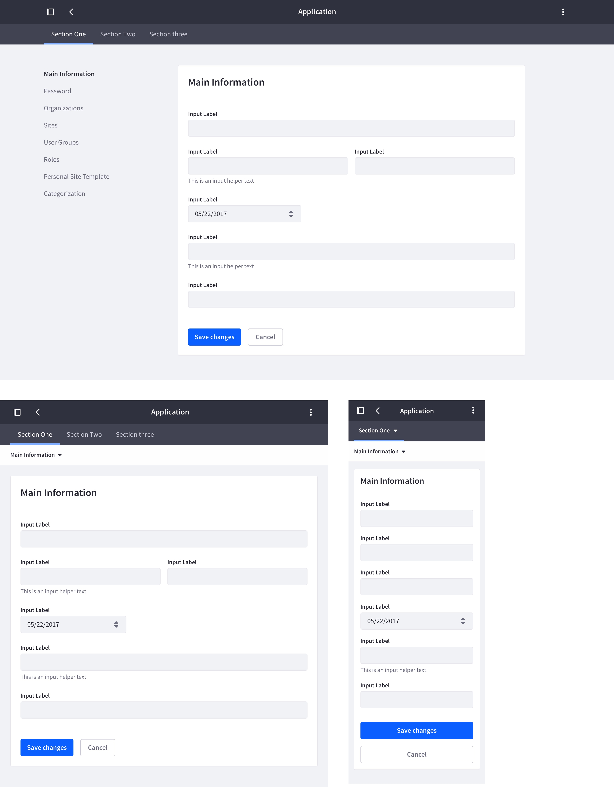

Sidebar + Box
Description
We apply this layout when we need a left sidebar to include a vertical navigation. The space is organized in 3 columns for the sidebar and 9 or 8 columns for the content depending on its type. This way we would have two different configurations:
3+9 columns
This is the default configuration used when the content is a table, a list or any other content structure except a form.

Responsive behavior
On viewport sizes equal or less than 768px we introduce to changes of the layout in order to optimize space for content:
- The change of the vertical navigation to a toggle top navigation as is described on the Nested navigation.
- The change of the box from 9 to 12 columns.

Metrics

Example

3+8 columns (Forms)
When the box shown in this type of layout is a box that contains a form, it has to be adapted to the measures established for form containers. Therefore the space to occupy would be 8 instead of 9 columns.

Responsive behavior
The main point to take into account is the change from 8 to 9 columns on viewport sizes equal or less than 992px in order to optimize space for content.

Metrics

Example

Exceptions
3+9 columns and 3+8 columns are the most common situations to have in Lexicon interfaces, but 2 other exceptional scenarios are possible.
- Scenario 1: 3+9 columns configuration turns into 2+10 columns configuration.
- Scenario 2: 3+8 columns configuration turns into 2+9 columns configuration.
These two scenarios are only desirable when you are sure that the sidebar width is enough with 2 columns. Reasons to move into these configurations can be:
- Really short vertical navigation titles. Please make sure this happens in all the languages that your site manages.
- More space in the main box to fit a table with many columns.
Please if you move into these configuration make sure you apply 2 columns for the sidebar in all application sections instead of 2 in some and 3 in others for the sake of consistency in your application.